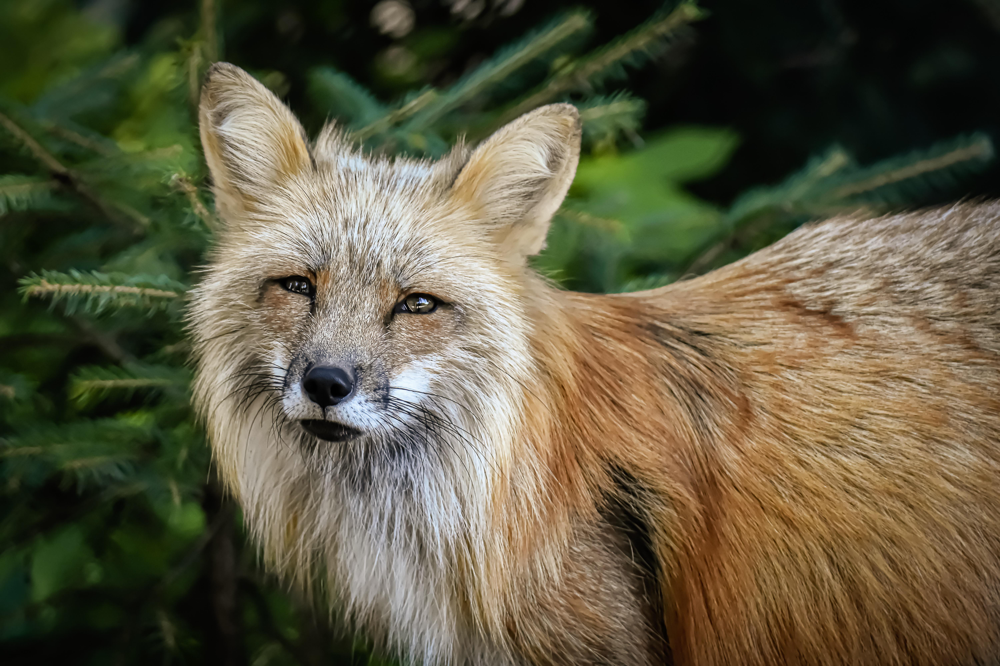
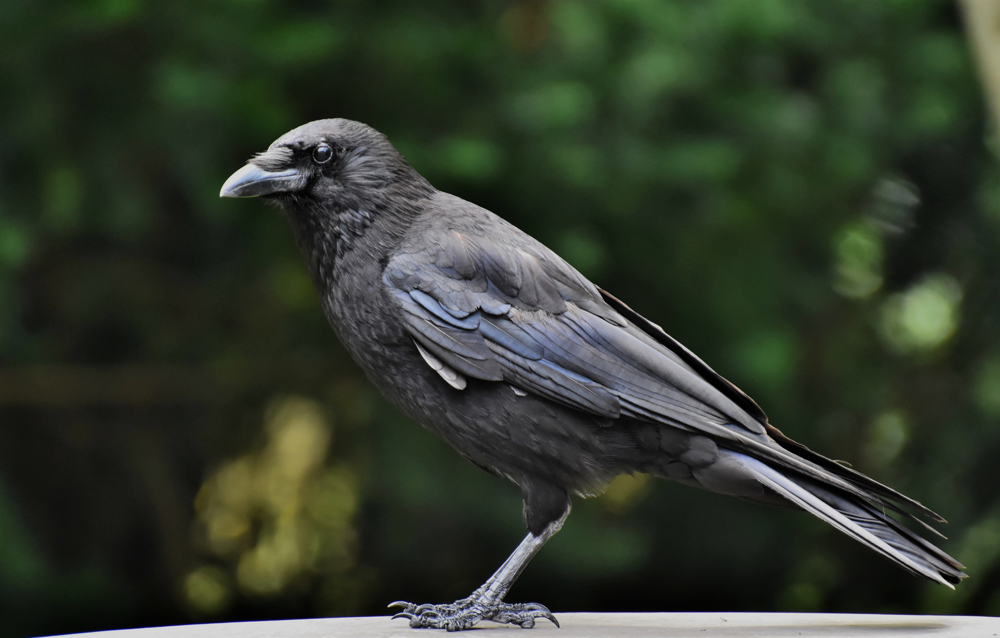

A crow was sitting on a branch with a piece of cheese in her beak when a fox observed her and set his wits to work to discover some way of getting the cheese. He came to stand under the tree, looked up, and said, "What a lovely creature I see! Her beauty is unmatched, her feathers shine like jewels. Surely such a magnificent bird would have a melodious voice to match her looks. If I could just hear a single song from her, I could hail her as the queen of birds!"The crow, flattered by the fox's words, opened her beak and gave her loudest caw. The cheese slipped from her grasp and into the fox's waiting jaws. "I see that you do indeed have a strong voice," he said to the crow, "but what you really want are wits."